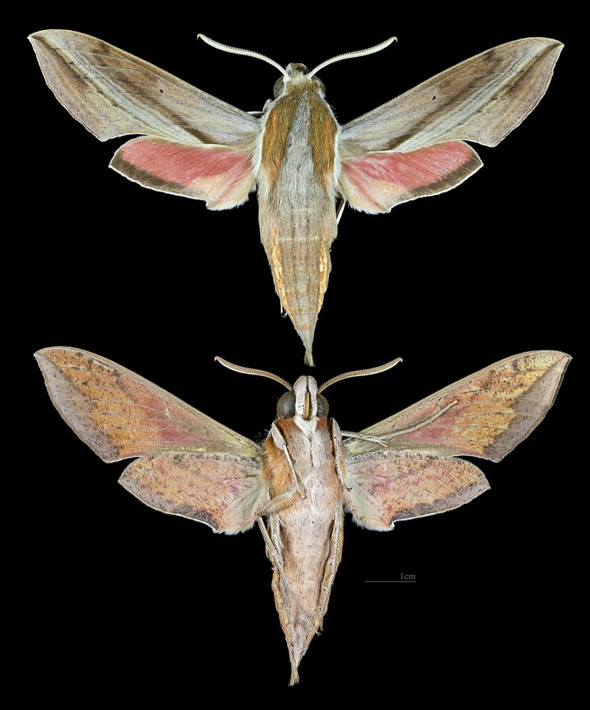

रोसेटा बाक पतंगाRosetta Hawkmoth
Hippotion rosetta · Sphingidae · INS-0233

- Scientific name वैज्ञानिक नाम
- Hippotion rosetta (Swinhoe, 1892)
- Family कुल
- Sphingidae
- Hindi हिंदी
- रोसेटा बाक पतंगा
- Local names स्थानीय नाम
- rosetta hawkmoth, hippotion rosetta, rosetta hawk moth, roseta bak patanga
- Status here यहाँ की स्थिति
- native
- Movement आवागमन
- Resident, here all year
- Known from कहाँ दर्ज
- Others have published records from the wider Awadh–Purvanchal plain, none yet from Basti–Ayodhya अवध–पूर्वांचल से दूसरों के प्रकाशित अभिलेख, बस्ती–अयोध्या से अभी नहीं
- IUCN IUCN
- not evaluated
- Review समीक्षा
- not yet reviewed
When to look कब देखें
Present all year. साल भर मौजूद।
Tell it apart from इनसे अलग पहचानें
रोसेटा बाक पतंगा / Rosetta Hawkmoth
Hippotion rosetta (Swinhoe, 1892) — Sphingidae
रोसेटा बाक पतंगा — शाम ढलते ही फूलों पर हेलीकॉप्टर की तरह मंडराने वाला एक बहुत फुर्तीला और आकर्षक बाक पतंगा। इसके आगे के पंख चिकने कत्थई और बादामी धारियों से सजे होते हैं, जबकि पिछले पंखों के आधार पर हल्का गुलाबी-लाल रंग झलकता है। इसकी लंबी सूंड होती है जिससे यह गहरे फूलों में मुंह डाले बिना हवा में उड़ते हुए ही रस पी लेता है।
Quick Identification त्वरित पहचान
| Feature | Description |
|---|---|
| Habit | Medium-sized, sleek aerodynamic hawkmoth capable of hovering flight |
| Forewing | Pale buff to greyish-brown with delicate longitudinal oblique streaks |
| Discal dot | Minute, sharp, distinct black dot in the forewing cell |
| Hindwing | Dark fuscous-brown with a rosy-pink or pale reddish basal patch |
| Abdomen | Sleekly tapered with delicate paired pale dorsal and lateral lines |
| Caterpillar | Green or brown with prominent snake-like eye-spots on anterior segments |
Field tip: Watch flowering garden beds of periwinkle, ixora, or petunia during twilight for a hovering moth that dart rapidly between blossoms.
हिंदी — कैसे पहचानें: कत्थई-बादामी तीखे पंख, पिछले पंखों पर गुलाबी चमक, और शाम के समय फूलों पर मंडराते हुए रस पीना।
Morphology आकारिकी
Adult description: Body sleek, torpedo-shaped; head and thorax fawn-coloured with a pale lateral stripe running from palpi over eyes to wing base. Forewing long, narrow, acutely pointed at apex; ground colour pale ochreous-brown to buff, ornamented with fine, dark brown oblique lines running from apex towards inner margin; a prominent tiny black discal dot sits in the cell. Hindwing fuscous-black with a warm pinkish-red or rosy-ochreous wash at base and along the inner margin.
Mouthparts: Proboscis extremely long, exceeding the body length, allowing access to nectar reservoirs of tubular nocturnal flowers.
Larval morphology: Caterpillar polymorphic (green or brown form); fourth abdominal segment bears an eye-spot mimicking a snake's head, complete with black pupil and pale blue ring.
हिंदी: इसके पंख पतले और नुकीले होते हैं। पिछले पंखों पर गुलाबी रंग होता है। इसकी सूंड बहुत लंबी होती है जो गहरे फूलों के तल तक पहुंचती है।
Behaviour & Ecology व्यवहार और पारिस्थितिकी
Hippotion rosetta is crepuscular and nocturnal. Flight commences precisely at dusk, when individuals hover gracefully in front of open flowers, producing a low hum with their rapid wingbeats.
The moth inserts its long proboscis deep into corolla tubes while remaining suspended in mid-air, shifting from blossom to blossom with astonishing speed. They are strongly attracted to evening-scented white and pale flowers.
When alarmed, the caterpillar inflates its thoracic segments and pulls its head inward, displaying the enlarged false eye-spots to mimic a small viper, a visual startle defense against foliage-gleaning birds.
हिंदी: यह पतंगा गोधूलि वेला (शाम) में उड़ता है। यह फूलों पर बैठता नहीं बल्कि हवा में मंडराते हुए ही अपनी लंबी सूंड से रस पीता है। खतरा होने पर इसकी इल्ली अपना सिर फुलाकर सांप जैसा रूप बना लेती है।
Life Cycle / Phenology जीवन चक्र
| Season / Month | Stage & Activity |
|---|---|
| April–June (Summer) | Adults emerge and feed on twilight nectar around garden plantings |
| July–August (Monsoon) | High breeding activity; females deposit translucent green eggs singly on leaves |
| September–October | Caterpillars feed voraciously on arum and ixora foliage; peak flight |
| November–December | Final generation pupates in loose subterranean cocoons under leaf mulch |
| January–March (Winter) | Overwintering primarily as pupae in garden soil and sheltered litter |
Multivoltine in tropical plains, completing three or more overlapping generations annually with the greatest abundance occurring during the humid monsoon months.
हिंदी: बरसात के समय यह पतंगा सबसे ज्यादा सक्रिय रहता है। मादा पत्तों पर अकेले-अकेले अंडे देती है। सुंडी तेजी से पत्ते खाकर जमीन में प्यूपा बन जाती है।
Host Plants or Prey आहार
- Ornamental and Garden Hosts: Caterpillars feed on Ixora coccinea, Morinda citrifolia, and Pentas lanceolata.
- Wild and Arum Hosts: Feeds on foliage of Amorphophallus, Colocasia esculenta (arbi), and Oldenlandia.
- Adult Nectar: Forages on deep tubular flowers of Mirabilis jalapa (gul abbas), Catharanthus roseus (sadabahar), and Jasminum.
हिंदी: इसकी सुंडी अरबी, मदार और बगीचों में लगे इक्सोरा के पत्तों को खाती है। वयस्क पतंगा सदाबहार, चमेली और गुल अब्बास के फूलों का रस पीता है।
Predators / Natural Enemies शत्रु
- Nocturnal Predators: Insectivorous bats (Tadarida, Pipistrellus) catch adults in swift flight; arboreal geckos ambush moths visiting verandah flowers.
- Invertebrates: Large praying mantids and predatory bush crickets seize hovering adults at blossoms.
- Parasitoids: Tachinid flies parasitize the snake-mimicking caterpillars.
हिंदी: रात में उड़ने वाले चमगादड़ हवा में इनका शिकार करते हैं। घरों की छिपकलियां फूलों के पास बैठकर इन्हें झपटती हैं।
Agricultural / Human Relevance कृषि प्रासंगिकता
- Beneficial pollinator: Plays a vital ecological role as a specialized pollinator of night-blooming crops, native wildflowers, and fragrant garden flora.
- Minor vegetable associate: Caterpillars occasionally feed on garden arbi (taro) foliage, but damage is sporadic and rarely requires control measures.
- Urban wildlife: Frequently observed hovering over suburban window boxes and garden flowers in towns across the region.
हिंदी: यह रात में खिलने वाले फूलों का परागण करने वाला एक अत्यंत उपयोगी कीट है। यह बगीचों की अरबी पर कभी-कभी पत्ते खाता है पर कोई गंभीर नुकसान नहीं करता।
Expected Locally स्थानीय रूप से अपेक्षित
Not a field record. Written from published accounts for eastern Uttar Pradesh. No confirmed local sighting yet — if you have seen it, that is what the atlas needs.
अभी तक स्थानीय पुष्टि नहीं। यह विवरण प्रकाशित स्रोतों से है, किसी अवलोकन से नहीं।
Expected across the village gardens, town compounds, canal corridors, and moist orchard borders of Basti, Ayodhya, and Sant Kabir Nagar wherever evening-scented flowers and arum plants exist. GBIF holds published records from the wider Awadh–Purvanchal plain, none yet from Basti–Ayodhya. A first local record would be a photograph of an adult moth hovering at flowers or resting at light, submitted with date and locality through the About page.
Distribution वितरण
Global range: Widespread across South, Southeast, and East Asia, from India and Sri Lanka through China, Taiwan, and Southeast Asia to northern Australia.
In India: Recorded throughout peninsular India, the Indo-Gangetic plain, Assam, and the Andaman Islands (Bell & Scott 1937).
In Uttar Pradesh: Distributed across the plains in cultivated and urban green areas.
In Basti district / eastern UP: Expected throughout gardens, parks, and riverside rural habitations.
हिंदी: यह पतंगा भारत, श्रीलंका, चीन और दक्षिण-पूर्व एशिया से लेकर ऑस्ट्रेलिया तक फैला हुआ है। उत्तर प्रदेश के लगभग सभी मैदानी क्षेत्रों में पाया जाता है।
Research Questions शोध प्रश्न
- Which evening-blooming flowers attract the highest frequency of Hippotion rosetta in Basti? / बस्ती में कौन से रात में खिलने वाले फूल इस पतंगे को सबसे ज्यादा आकर्षित करते हैं?
- How does the false eye-spot display in the caterpillar affect attack rates by local bulbuls? / सुंडी की नकली आंखें देखकर बुलबुल जैसी चिड़ियों के हमले पर क्या असर पड़ता है?
- What is the hovering energy expenditure during continuous nectar foraging? / फूलों पर लगातार मंडराते हुए रस चूसने में यह पतंगा कितनी ऊर्जा खर्च करता है?
- How do domestic porch lights affect twilight pollination visits by this hawkmoth? / घरों के बाहर जलने वाली बत्तियां शाम के समय इसके परागण कार्य को कितना प्रभावित करती हैं?
- Can schoolchildren observe its long tongue uncoiling into a deep flower tube during twilight? / क्या स्कूली बच्चे शाम को अपनी आंखों से इसकी लंबी सूंड को फूल के अंदर जाते देख सकते हैं?
Similar Species मिलती-जुलती प्रजातियाँ
| Species | How to tell apart | हिंदी |
|---|---|---|
| Impatiens Hawkmoth (Theretra oldenlandiae) | Has two distinct silvery-white longitudinal stripes along the abdomen | पेट पर दो चमकीली चांदी जैसी सफेद धारियां होती हैं |
| Coffee Bee Hawkmoth (Cephonodes hylas) | Transparent hyaline wings and green bumblebee-like body; diurnal | पारदर्शी कांच जैसे पंख, भौंरे जैसा हरा शरीर |
| Convolvulus Hawkmoth (Agrius convolvuli) | Much larger; grey wings; abdomen boldly barred with pink and black | बहुत बड़ा, पंख सलेटी, पेट पर गुलाबी-काली धारियां |
Field rule: A sleek buff-brown hawkmoth with an oblique streaked forewing, a tiny black discal dot, and pinkish-red on the hindwing base identifies Hippotion rosetta.
Taxonomy & Classification वर्गीकरण
Original description. Described by Charles Swinhoe in 1892 as Choerocampa rosetta in Catalogue of Eastern and Australian Lepidoptera Heterocera in the Collection of the Oxford University Museum, part 1: Sphinges and Bombyces, p. 16.
Subspecies. Monotypic across South Asia; recognized without distinct regional subspecies.
Family and order placement. Belongs to the family Sphingidae, subfamily Macroglossinae, tribe Macroglossini, in the order Lepidoptera.
IUCN status rationale. Not evaluated on the IUCN Red List; an abundant and widespread species utilizing common garden and wild plants across Asia.
हिंदी: चार्ल्स स्विन्हो ने 1892 में इसका पहला वैज्ञानिक विवरण दिया था। यह स्फिंगिडी कुल और मैक्रोग्लोसिनी जनजाति का सदस्य है।
Photo Gallery फोटो गैलरी
No photos yet — add field photos to media/species/rosetta_hawkmoth/ and run node scripts/sync_photos.js.
Photos needed आवश्यक फोटो
- [ ] Adult hovering at flowers during dusk (शाम के समय फूल पर मंडराता हुआ पतंगा)
- [ ] Spread-wing specimen showing pink hindwing base (फैले हुए पंख जिस पर गुलाबी आधार दिखे)
- [ ] Snake-mimicking caterpillar on arbi leaf (अरबी के पत्ते पर सांप जैसी सुंडी)
References संदर्भ
- Swinhoe, C. (1892). Catalogue of Eastern and Australian Lepidoptera Heterocera in the Collection of the Oxford University Museum, part 1, p. 16. Clarendon Press, Oxford.
- Bell, T.R.D. & Scott, F.B. (1937). The Fauna of British India, including Ceylon and Burma: Moths, vol. 5: Sphingidae, p. 431. Taylor and Francis, London.
- Holloway, J.D. (1987). The Moths of Borneo: part 3, Superfamily Bombycoidea. Southdene, Kuala Lumpur.
- Rothschild, W. & Jordan, K. (1903). A revision of the lepidopterous family Sphingidae. Novitates Zoologicae, 9(suppl.), pp. 1–972.
- Robinson, G.S., Ackery, P.R., Kitching, I.J., Beccaloni, G.W. & Hernández, L.M. (2001). Hostplants of the Moth and Butterfly Caterpillars of the Oriental Region. Natural History Museum, London.
- GBIF Occurrence Data — Hippotion rosetta (Swinhoe, 1892), India (2025).
Source file: species/fauna/insects/rosetta_hawkmoth.md